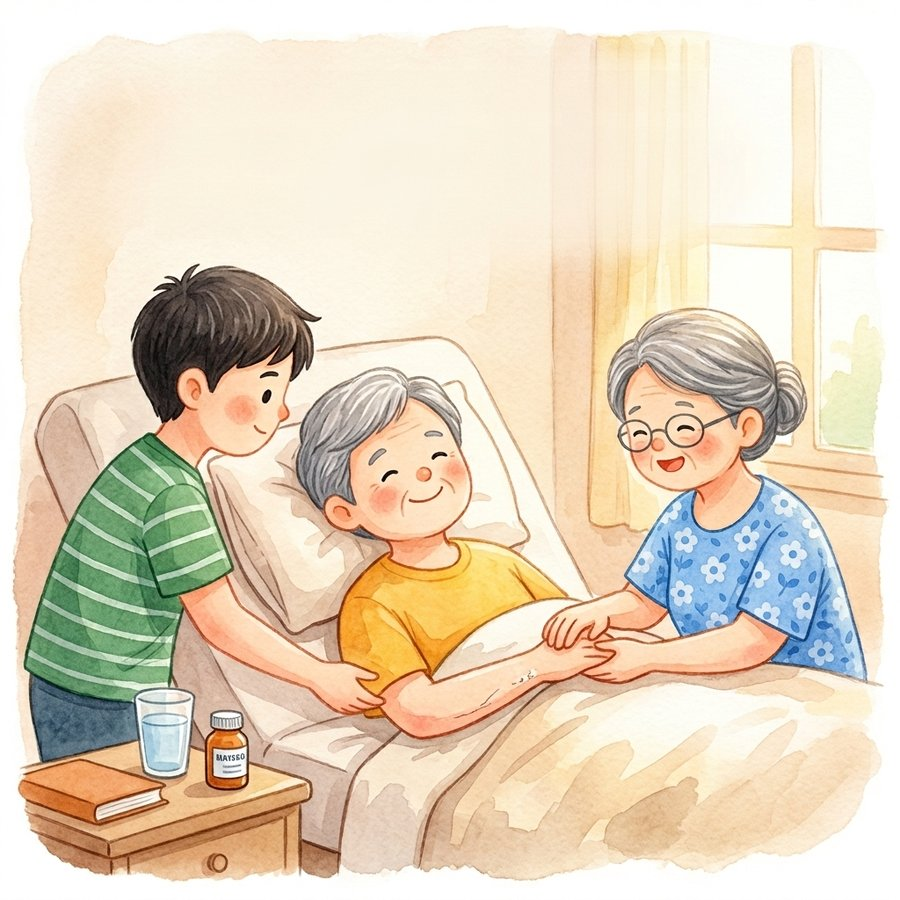
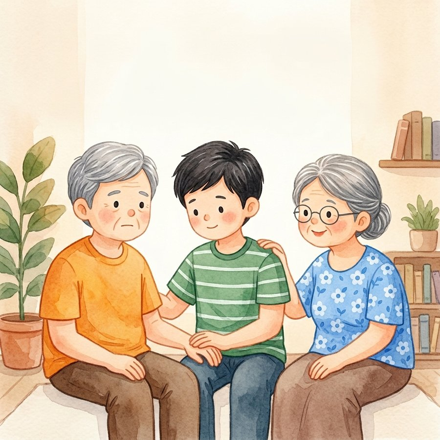
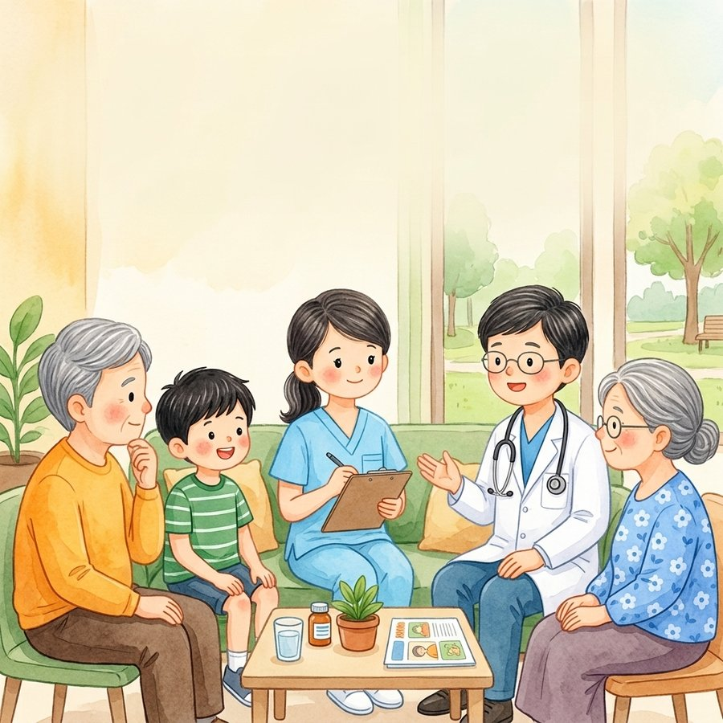
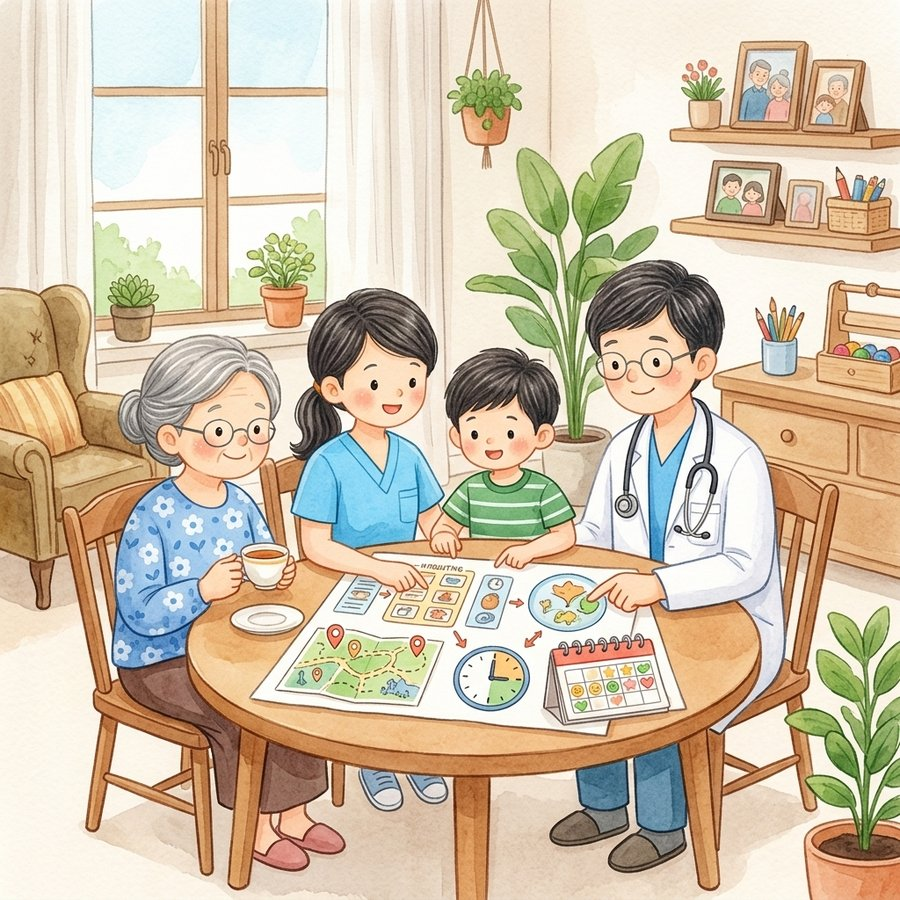

ดูแลอาการและความไม่สบาย
บรรเทาความเจ็บปวดและอาการต่าง ๆ เพื่อให้ผู้ป่วยรู้สึกสบายขึ้นในแต่ละวัน
การดูแลแบบประคับประคอง เป็นการดูแลที่มุ่งเน้นคุณภาพชีวิตของผู้ป่วยและครอบครัว ทั้งด้านร่างกาย จิตใจ สังคม และความต้องการของแต่ละบุคคล

บรรเทาความเจ็บปวดและอาการต่าง ๆ เพื่อให้ผู้ป่วยรู้สึกสบายขึ้นในแต่ละวัน

รับฟังและอยู่เคียงข้าง เพื่อดูแลความรู้สึกของผู้ป่วยอย่างอ่อนโยน

ให้คำแนะนำและกำลังใจแก่ผู้ดูแล เพื่อให้สามารถดูแลได้อย่างมั่นใจ

ร่วมวางแผนการดูแลที่สอดคล้องกับความต้องการของผู้ป่วยและครอบครัว
การดูแลแบบประคับประคอง (Palliative Care) คือ การดูแลผู้ป่วยที่เป็นโรครุนแรง โรคเรื้อรัง หรือโรคที่อาจส่งผลต่อคุณภาพชีวิต โดยมุ่งเน้นให้ผู้ป่วย มีคุณภาพชีวิตที่ดีที่สุดเท่าที่เป็นไปได้ ลดความทุกข์ทรมานจากอาการต่าง ๆ และให้ความสำคัญกับความต้องการของผู้ป่วยและครอบครัว
การดูแลไม่ได้มุ่งเน้นเฉพาะการรักษาโรค แต่ครอบคลุมทั้ง ร่างกาย จิตใจ สังคม และจิตวิญญาณ รวมถึงการให้คำแนะนำและสนับสนุนครอบครัวและผู้ดูแล เพื่อให้ทุกคนสามารถก้าวผ่านช่วงเวลาของการเจ็บป่วยไปด้วยความเข้าใจและมั่นใจ
จัดการอาการและความเจ็บปวดอย่างเหมาะสม
เสริมกำลังใจและดูแลสภาพจิตใจของผู้ป่วย
ให้ความหมายและความสงบในช่วงเวลาสำคัญ
ดูแลผู้ดูแลและครอบครัวควบคู่ไปด้วย
สนับสนุนความสัมพันธ์กับครอบครัวและชุมชน
วางแผนความต้องการล่วงหน้าอย่างรอบด้าน